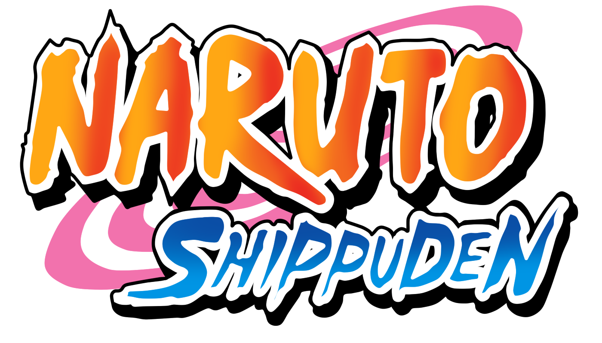
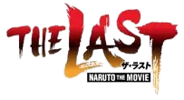
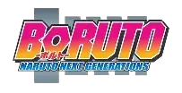

Naruto é um anime criado por Masashi Kishimoto que conta a história de Naruto Uzumaki, um jovem ninja da Vila da Folha que sonha em se tornar Hokage, o líder mais forte da vila. Carregando dentro de si a poderosa Raposa de Nove Caudas, Naruto enfrenta desafios, faz amizades e supera obstáculos enquanto busca reconhecimento e proteção para seus amigos.
Lançado em 2002, "Naruto Clássico" é um anime que abrange 220 episódios e se tornou um fenômeno mundial. A história gira em torno de Naruto Uzumaki, um órfão da Vila Oculta da Folha (Konoha), que carrega dentro de si a Raposa de Nove Caudas, uma besta que destruiu parte da vila anos atrás. Devido a isso, Naruto é rejeitado pelos moradores, mas ele nunca desiste de seu sonho de ser reconhecido e se tornar Hokage, o líder da vila.

Naruto Shippuden" é a continuação da série "Naruto", acompanhando o crescimento de Naruto Uzumaki e seus amigos enquanto enfrentam novos desafios e inimigos poderosos, especialmente a organização Akatsuki. Contexto Geral "Naruto Shippuden" se passa dois anos e meio após os eventos da série original "Naruto". O protagonista, Naruto Uzumaki, retorna à Vila Oculta da Folha após um intenso treinamento com Jiraiya. A série explora temas de amizade, sacrifício e a luta contra o mal, enquanto os personagens principais evoluem e enfrentam desafios cada vez maiores

Naruto: The Last" é o décimo filme da franquia Naruto, que se passa após a Quarta Grande Guerra Ninja e foca na missão de Naruto e seus amigos para resgatar Hanabi Hyuuga, sequestrada por Toneri Ootsutsuki. Enredo O filme começa dois anos após os eventos da Quarta Grande Guerra Ninja, onde o mundo está em paz. No entanto, essa paz é ameaçada quando Hanabi Hyuuga, a irmã mais nova de Hinata, é sequestrada por Toneri Ootsutsuki, um descendente de Kaguya Ootsutsuki. Toneri planeja usar Hanabi para seus próprios objetivos malignos, e Naruto Uzumaki, junto com Sakura, Sai, Shikamaru e Hinata, embarca em uma missão para resgatar Hanabi e impedir a destruição do mundo.

Boruto: Naruto Next Generations é a sequência direta de Naruto Shippuden, onde acompanhamos Boruto Uzumaki, filho de Naruto, e seus colegas de Time 7. A série explora novas aventuras e interações com personagens antigos e novos da franquia. Criado em 2016, o mangá deu origem ao anime em 2017, continuando a rica história do universo Naruto.

Boruto: Two Blue Vortex é a Parte II da série Boruto: Naruto Next Generations. A trama começa com Boruto Uzumaki enfrentando as consequências de seus atos passados, enquanto o vilão Code está à solta e a ameaça dos Otsutsuki paira no ar. O arco explora temas como identidade e lealdade, além de trazer muita ação e desenvolvimento dos personagens.